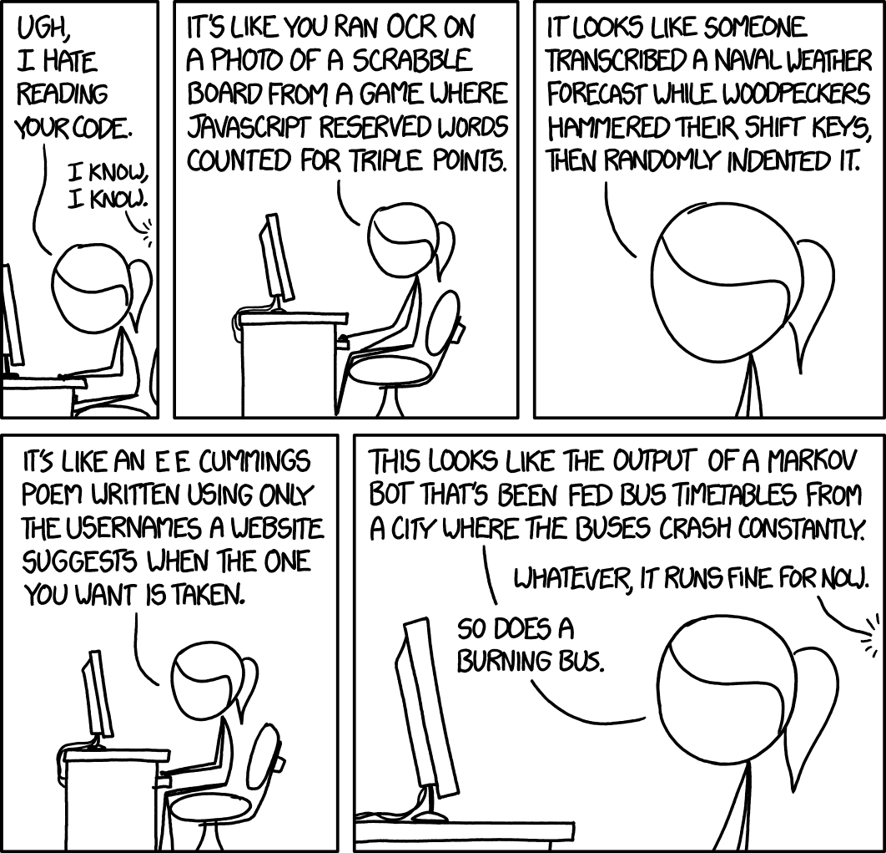

Cracking the Code Review

Source: xkcd.com
What is a Code Review?
- A final step in the development process
-
Have your code looked over and tested by your peers
- Especially effective if peers are experts in that section of the code
Why do we do Code Reviews?
- Code quality matters!
- Fresh, unbiased eyes can find errors and opportunities for improvement
After experiencing the benefits of peer reviews for nearly fifteen years, I would never work in a team that did not perform them.
- Karl Wiegers, “Humanizing Peer Reviews”
What does a Good Code Review Look Like?
- Modular, easy to follow
- Makes good use of everyone's time
- Effectively transfers knowledge
- Thorough; identifies relevant issues to fix
How can I make my code reviews more effective as a
- code author?
- code reviewer?
Responsibilities of the Code Author
- Empower your reviewers be more effective
- Pick the right reviewers
- Don't waste your reviewers’ time
Principle: Modular commits and code reviews are easier to review effectively
- Just as good function or class has a single, clear, straightforward purpose, a good commit or code review solves one clear problem and does it well
- One major change per commit
- 1:1 mapping between issue in JIRA and code review
- Keep large refactoring or formatting changes separate
Example
Converting RecurlyId from a Long data type to a UUID string

Principle: Smaller code reviews get reviewed more thoroughly
- Break big features into small but complete changes
- Push/review incremental changes frequently
- Avoid asking reviewers to stare at your code for hours

Ask a programmer to review 10 lines of code, and they’ll find 10 issues. Ask them to review 500 lines, and they’ll just say it looks good.
Principle: Don’t distract your reviewers with tedious code flaws
- Review your own code
- Let your code build
Review your own code
- Before submitting code review, look over changes one last time
- Minimal time/effort can save your reviewers’ time
- Find opportunities to refactor or fix bugs
Let your code build
- Let static analysis and runtime tests do what they do best!
- Merge latest upstream branch into your branch before running builds
- Avoid spamming reviewers with constant code review updates
Principle: Who you ask to review your code matters
-
Feature experts
- for finding bugs
-
Feature novices
- to share knowledge
- Non-technical stakeholders
- Don't overwhelm people who have a lot of code reviews already
Balance between “enough” and “too many”
- Too many may cause complacency from reviewers
- Ask highly specialized or overwhelmed reviewers to review only certain files/functions/lines
- Don’t be a single point of (knowledge) failure
Principle: Enable your reviewers to guide themselves through your code
- Leave helpful comments on code reviews and/or in code to show flow of thought
- Provide background for the changes and testing tips for the code
- Explain complex algorithms
- Review large or complex changes in person
Responsibilities of the Code Reviewer
- Review the code, not the author
- Be timely
- Be thorough
Principle: Computers are better at reading code than you are
- Ensure builds pass
-
Run the code, don’t just read it
- Ask developer for testing suggestions or affected features
Principle: Code authors need to context-switch, too
- Be timely in reviewing and giving feedback
- Be willing to interrupt your work for high-priority code reviews
Principle: Be a gatekeeper of code quality
- Understand our code quality guidelines
- Unit tests
- I18n
- Logging and metrics
- Analytics
- Security concerns
- Has merged in latest upstream branch recently
Principle: Be the reviewer you wish you could have
- Leave Todos on the pull request for the most important feedback
- Leave helpful feedback in addition to pointing out bugs
- Ask questions; prompt discussion and thoughtful analysis
- Don’t rush your reviews
Additional Reading
Printable Code Review Cheat Sheet
https://www.lucidchart.com/techblog/2017/03/02/cracking-code-review-part-2-tips-reviewers/
https://testing.googleblog.com/2017/06/code-health-too-many-comments-on-your.html
Final Thoughts
- Code reviews are about quality, not finding fault. The point of software code review is to eliminate as many defects as possible, regardless of who "caused" the error.
- As code reviews expose developers to new ideas and technologies, they write better and better code.
- When done right, code reviews actually save time in the long run.